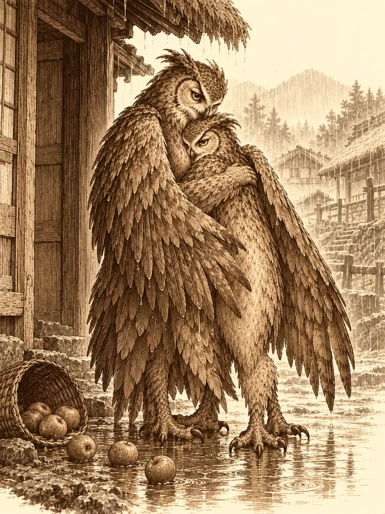

Capítulo 74
El último bastión
Libro V · Los guardianes del Norte y del Sur
En el sur llovía de otra manera. No era la lluvia mansa de Ukio, que mojaba los huertos y se iba; era un agua terca y oblicua que caía sobre una tierra árida sin conseguir ablandarla. El campamento había crecido desde las primeras expediciones: una herrería donde se remendaban las armaduras de los samuráis, un alquimista, el toldo de un sabio que hacía de clérigo y, al fondo, la tienda del general que vigilaba las montañas para que las tropas de Otakemaru no las cruzaran. En el centro, una carpa enorme e improvisada servía de taberna.
Llegaron cuatro. Hayate, con el arco del protector del norte a la espalda y las alas pesadas de agua; Erk, medio escondida tras él, con las plumas azules pegadas al cuerpo y sus ojos redondos de lechuza recorriéndolo todo; Ermitaño, el clérigo de Chauntea, enorme y sereno, con barro hasta las rodillas, y Zarim, el hermanastro de Hayate. Compartían madre y no padre, y los dos habían estado a punto de convertirse en otra cosa en el norte, con las venas llenas de sangre negra, hasta que Sirth se la sacó del cuerpo. Seguían dos rastros a la vez: el del último templo que les faltaba y el del nido donde había nacido Erk. No sabían que, mientras cruzaban medio Kuroto, un sectario capaz de dominar a los yokai asaltaba la base de Ukio.
Ermitaño se ofreció a presentarse ante el general. Los demás fueron directos a la carpa, que olía a leña húmeda, a grasa de cochinillo y a pluma mojada. Lo primero que vieron fue a un bardo con aspecto de gallo, vestido de colores alegres, picoteando de un cuenco de grano con el buche algo hinchado por la bebida. Se estaba volviendo a prender en el pecho la insignia de los cazadores, que se le había caído cuando una camarera le cruzó la cara.
"Qué maravilla para la vista", dijo al verlos. "Una paloma, un búho, un palomo... Esto está lleno".
Era cazador también, aunque todavía no tenía muy claro en qué consistía el oficio. Se llamaba Infinito. Pidieron una ronda de algo fuerte para entrar en calor, y una gota gruesa cayó en medio de la mesa. Media carpa no tenía techo.
El general recibió a Ermitaño con una armadura imponente y gesto de prisa. Sabía que buscaban el templo del sur y sus hombres habían encontrado unos caminos hacia las montañas, escarpados y peligrosos; algunos soldados no habían vuelto de ellos. Le marcó las rutas en un mapa y le dijo que podían descansar antes de salir. El clérigo volvió a la carpa con el mapa bajo la túnica, sacudiéndose el agua como un perro grande, y alguien observó que, entre tanto pico, habían mandado a hablar con el general al único que no era un pájaro.
Erk le explicó a Infinito que ella no buscaba ningún templo, sino un nido. El gallo, inclinándose sobre la mesa, le aseguró que podría hacerle compañía si se lo pedía. Erk se apartó un palmo y él suspiró y volvió al grano.
Decidieron dormir allí y partir al día siguiente. Hayate le pasó a Erk cuarenta flechas de su carcaj, y ella las aceptó sin fingir que no le hacían falta. Infinito preguntó si, ya que repartían, había alguna espada para él, y luego se corrigió con la mano en el pecho:
"No. Mi arma es mi voz".
En la herrería del campamento los pájaros cambiaron sus armaduras de cuero castigadas por otras mejores, y Ermitaño se compró un escudo nuevo. Luego el clérigo se quedó un buen rato mirando el yunque. Llevaba tiempo con la idea de aprender un oficio, y casi todos los que tenía a su alcance pasaban por desollar, talar o arrancar algo vivo. Él amaba demasiado la vida para eso. El herrero, en cambio, podía hacer escudos y armaduras, cosas que protegían a la gente. Pagó lo que costaba empezar y salió con las manos vacías y la cabeza llena de planes, porque en el sur nadie vendía materiales de forja.
Mientras tanto, Infinito había trabado amistad con Zarim y acabó preguntándole quién era y por qué viajaba con aquella gente.
"Soy el hermanastro de Hayate. Arrasaron mi pueblo en el norte. Yo era hijo del rey, pero el rey murió. Unos sectarios envenenaron a los aarakocra con una sangre negra que los volvió oscuros, criaturas de la noche. Mi hermano tuvo que matar a nuestra madre, y nosotros casi acabamos igual. Un clérigo amigo vuestro nos salvó".
"¿Puede repetirse esa historia?", preguntó el bardo. "¿O puedo hacer con ella una canción bonita?".
"Mientras Otakemaru siga ahí, nunca estaremos a salvo".
"Entonces habrá que combatirlo con un poco de felicidad", dijo Infinito, y empezó a marcar un ritmo con los dedos sobre la mesa, buscando rimas.
Aquella noche Hayate, que había volado sin descanso desde Ukio al saber que el grupo iba al sur, rezó ante su pequeño altar a los dioses del viento y del trueno. Por la mañana encontró sobre él tres piedras frías con una tormenta dormida dentro: arrojadas, llamarían al relámpago sobre un enemigo, aunque su fuerza no duraría más de un día. Erk había llegado tarde porque había hecho el viaje por las montañas, volando bajo y mirando cada saliente por si encontraba un nido; antes de partir le había dicho a Shizuka que se iba a buscar a su familia.
Wakaryama, llamaban a aquellas cumbres: las montañas de la muerte. Más allá empezaban las tierras de Otakemaru. Los pasos eran estrechos y la roca mojada resbalaba como el jabón. Infinito se sostenía a medias con su aleteo torpe, pero Ermitaño no tenía alas, y más de una vez el pie se le fue hacia el vacío y fueron Hayate o Erk quienes lo agarraron por la ropa, tirando hacia arriba con todas sus fuerzas.
Los dos intentaron subir para ver más lejos. Sobre las cumbres había una tapa de nubes que no se movía, una tempestad que parecía eterna, y el viento los zarandeaba en cuanto ganaban altura. Hacia el territorio de Otakemaru solo alcanzaron a distinguir picos afilados, uno detrás de otro, como dientes. Al caer la tarde la sensación de ser vigilados se volvió insoportable. Oían aleteos entre la lluvia, de criaturas del tamaño de una persona, y unos graznidos que a Hayate y a Erk les erizaron las plumas de la nuca. Eran voces de aarakocra, de compañeros convertidos por la sangre de Otakemaru.
Luego el viento les trajo metal contra metal. Delante, casi invisibles tras la cortina de agua, unos aarakocra que no estaban infectados luchaban por su vida. Ermitaño murmuró unas palabras de aliento y una calidez les recorrió el cuerpo; Infinito soltó una arenga tan florida que al menos les arrancó una sonrisa. Después avanzaron en silencio, y hasta el clérigo, con su armadura pesada, consiguió no hacer ruido.
Una criatura de alas negras enormes y nariz larga, armada con dos katanas, despedazaba a los defensores y dirigía a otra figura, un pájaro oscuro y retorcido que había sido de los suyos. Era un tengu, y no los había visto llegar.
Hayate cargó una flecha con el trueno y disparó primero. Erk soltó otra que atravesó a los dos enemigos en línea. Infinito tendió la mano hacia Ermitaño y el clérigo creció hasta casi doblar su tamaño; desde esa altura alzó el brazo y una lanza de luz cayó sobre el enemigo con un estampido que iluminó la ladera.

El aarakocra infectado se envolvió en un remolino de viento y voló hacia Infinito. Al llegar batió las alas contra el suelo y levantó una nube de arenilla. Los demás se taparon los ojos a tiempo; el bardo no. Ciego, se volvió invisible y se retiró hasta el borde del acantilado. El tengu respondió golpeando a un defensor con una katana y luego con la otra, cada corte con un chasquido eléctrico, y se lanzó contra Erk para descargarle otro tajo. Cuatro golpes en el tiempo en que un hombre da dos pasos.
La pelea se alargó. Erk guardó el arco y sacó sus dos espadas cortas, que no eran sus armas favoritas, y aun así le abrió al tengu una herida profunda. Hayate probó con el relámpago y vio a la criatura esquivar a medias la descarga y absorber el resto, como si la electricidad fuera de su misma sangre. Intentó inmovilizarlo con una plegaria pensada para enemigos humanos y el tengu ni la sintió. Una de las piedras de tormenta le arrancó apenas un gruñido.
Infinito, invisible, empezó a darle órdenes con una voz que parecía salir de todas partes.
"¡Desnúdate!".
El tengu buscó con la mirada el lugar de donde venía la voz y, ante el asombro de todos, se quitó la armadura y la dejó caer sobre las rocas. Más tarde el bardo le ordenó soltar las armas y una katana cayó a sus pies. La recogió enseguida, pero aquella torpeza les dio un respiro.
El defensor herido, apoyado en una roca con su lanza, reconoció a Hayate y a Erk con los ojos muy abiertos.
"Ese tengu es muy poderoso. Os ayudaré si vosotros me ayudáis".
Y arrojó jabalinas mientras le quedaron fuerzas.
Ermitaño levantó las manos hacia la lluvia y la obligó a obedecerle: el agua se juntó alrededor del tengu en una tormenta pequeña y furiosa que lo empujó lejos de sus compañeros. Sobre todo, el clérigo no dejó de curar. Cuando el tengu derribaba a alguien, lo levantaba; cuando caían varios, una ola de calor brotaba de él y les devolvía el aliento a la vez.
Erk aprendió con dolor cómo se defendía aquella criatura. Le disparó una flecha y el tengu la desvió con la hoja y se la devolvió, clavándosela a ella. Disparó otra cargada con una magia de raíces y espinas, y el tengu la desvió de nuevo: las enredaderas brotaron alrededor de Erk y la sujetaron al suelo, y tuvo que deshacer su propio hechizo para poder moverse.
Al final Hayate subió unos metros en el aire, cargó otra flecha con el rayo y buscó el hueco donde antes había estado la armadura. Los golpes se sucedieron un poco más, y el tengu cayó por fin sobre la roca mojada.
No habían llegado a tiempo para todos. Ermitaño se arrodilló junto a dos defensores caídos con la esperanza de que solo estuvieran inconscientes. El tengu les había cortado la cabeza, y al clérigo no le quedaba nada con qué devolverles la vida.
El superviviente se acercó cojeando, les dio las gracias y preguntó de dónde venían. Del norte, dijo Hayate. El aarakocra vio entonces el arco y le hizo una profunda reverencia.
"Eres el elegido del norte. El protector. Oímos que los atacaron hace poco".
Hayate no quiso explicarle demasiado. Bastante mal, dijo.
"Esta sangre de Otakemaru está corrompiendo nuestros poblados", contestó el otro. "Quieren llegar a los templos y maldecirlos. Nosotros protegemos el templo del sur, y sus tropas son cada vez más fuertes. Debemos proteger al Fénix".
Se volvió hacia Erk y la estudió de arriba abajo, como quien intenta recordar una cara.
"Te pareces mucho a Crek. Una compañera nuestra".
Les ofreció acompañarlos al poblado. Cuando quisieron cargar con los muertos se lo impidió: su sangre estaba infectada y acabarían convertidos en monstruos. Al ver a Zarim, que seguía apartado entre el viento, se le iluminó la cara.
"¡El príncipe Zarim! ¡Estás vivo!".
Zarim le contó lo ocurrido en el norte, que él había sido el único superviviente, que podía confiar en aquellos cazadores y que entre ellos había un clérigo capaz de curar la sangre de Otakemaru. Ermitaño percibió magia en las katanas y la armadura del tengu, pero recordó la advertencia y las dejaron donde estaban. Anotó el lugar exacto en su cuaderno; quizá volvería cuando supiera deshacer una maldición.
Al poblado solo se llegaba por un puente que acababa en un arco de madera, entre peñascos donde la niebla borraba las esquinas. Era un pueblo grande, colgado de la montaña, y casi todos sus habitantes tenían las plumas rojas. Cuando veían pasar a Hayate con su arco, inclinaban la cabeza.
Los dirigentes, que lucían unas coronas extrañas, escucharon el relato con gravedad. Lo del norte se parecía a lo que intentaban hacer allí. Antes había sido el turno de los del este, cuya tribu quedó anegada por los desastres que siguieron a los terremotos, y de los del oeste, que levantaron una gran torre en lo alto de una montaña y aun así fueron atacados. Si el norte había caído, todo se volvía más difícil.
"Somos los cazadores", les explicaron. "Estamos reuniendo el poder de los templos para hacer frente a Otakemaru".
Los dirigentes reconocieron en sus objetos las bendiciones de los guardianes.
"Los aarakocra somos sus protectores. Sabemos dónde está el templo del sur, y sin nuestro permiso no podéis entrar. Os acompañaremos, pero no así: tendréis que prepararos antes. Enviaremos un mensaje para reunir a más de los nuestros y partiremos cuando podamos".
Infinito, que había venido al sur a cumplir un encargo y se encontraba de pronto en medio de una profecía, miraba a unos y a otros esperando que alguien le explicara algo.
Erk preguntó por Crek con un hilo de voz. Le señalaron una casa en el extremo sur del poblado y fue hacia allí despacio, escondida detrás de Hayate.
Una mujer salió por la puerta con una cesta de manzanas. Hayate se apartó, y la mujer vio lo que había detrás de él. La cesta cayó y las manzanas rodaron por el suelo mojado sin que nadie hiciera ademán de recogerlas. Muy bajo, ella empezó a silbar una melodía lenta y grave, una canción de cuna. Erk la conocía de antes de tener ojos: era lo que oía cuando todavía estaba dentro del huevo.
"¿De dónde has sacado esa canción?".
"Es la que te cantaba. Soy tu madre".
Infinito sacó su instrumento y acompañó la melodía, y otro pájaro se puso a silbar con él. Crek se acercó con las alas abiertas.
"Hace años nos atacaron y robaron nuestros huevos. Pero sé que eres tú".
Erk se quedó rígida, sin saber qué hacer con los brazos, y dejó que la abrazara. Fue un abrazo tan tierno que dolía mirarlo, el de alguien que llevaba años guardándolo. A las dos se les saltaron las lágrimas, y mientras lloraban sus plumas azules empezaron a cambiar. Se encendieron poco a poco, como brasas a las que alguien sopla, hasta volverse rojas, del mismo rojo que las de casi todo el poblado.
"Por fin estás aquí. Eres una protectora de los guardianes", le dijo Crek. "Espera. Guardé algo para ti".
Se metió corriendo en la casa. Erk preguntó en un susurro si estaban seguros de que aquella mujer no mentía, y alguien le contestó que bastaba verlas una al lado de la otra.
Crek volvió con un arco dorado y le hizo una reverencia.
"Tú, hija mía, vas a ser la elegida. La protectora del sur".
En cuanto Erk lo tocó, una fuerza le recorrió la piel desde los dedos hasta la punta de las alas y el arma se le quedó unida como si siempre hubiera sido suya. Supo que con él el cielo la sostendría mejor y que cada flecha disparada desde el aire caería con más peso. Sus plumas se oscurecieron todavía más, hasta un tono de llama viva. No le dolió. Simplemente brillaba.
Crek se tapó la boca con las manos y volvió a abrazarla, más fuerte, llorando. Erk le dio unas palmaditas torpes en la espalda.
"Tranquila, señora".
La música seguía. A Ermitaño, apoyado en el marco de la puerta, se le escapó más de una lágrima que la lluvia tuvo la delicadeza de disimular. Ya sabían dónde estaba el último templo y quiénes lo guardaban, y entre las manzanas que nadie recogía, madre e hija seguían abrazadas.